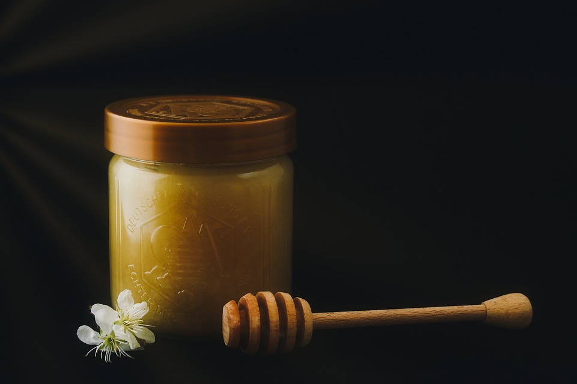

What do Bees do?
Bees have an extremeley important job in nature and are one of the main reasons nature is still flourishing today. Bees are know as pollinators, a pollinator is an animal that carries pollen from one plant to another as they collect it or eat nectar from a flower. Other animals can do this such as; bats, birds, and butterflies, but none compare to how much a bee can spread pollen due to their furry legs and colony size. Bees also create honey which is used all throughout the world and in bee hives to help sustain the worker bees and the queen bee. The USDA has stated that 3/4 of the world's flowering plants and 30% of the world's crop production is dependent on these pollinators. Having bees around is crucial to keeping our whole ecosystem from collapsing and keeping our natural resources high and fruitful.
Other Benefits to Humans
- Pollinators produces half of the world’s oils, fibers, and raw materials
- They can prevent soil erosion
- Helping plants reproduce can increase carbon sequestration
What is honey?
Honey is a sticky substance made in bee hives, this substance consists of glucose and frucose which makes it sweeter than regular sugar. It also contains vitamins, minerals, and nutrients humans need to survive, making it beneficial to our health to consume. Since honey is packed with all of these things it can be used in a number of ways including medicinal and nutritional purposes. Honey has been used for hundreds of years in dressing wounds as it is very effective in the prevention of bacterial and fungal infections from entering the body. The shelf life of honey is indefinitley even if it crystalizes, this property makes it easy to keep readily available and helps baked goods stay fresh longer. Mead is an alcohol made from honey and is usually on the cheaper side since it can be made simple and sweet depending on how it is made. There are so many benefits from honey and having bees here to make it is one reason why we need to protects bees and harvest honey in more humane and natural ways.
Ethical Beekeeping Companies
- Equal Exchange Organic Clear Honey
- Raw Health Organic Honey
- Hilltop Honey
- Essential Organic Honey